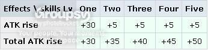

เท่าที่เราเข้าใจนะ เพราะเราไม่ได้เล่น BM เราเล่นข้ามาเล่น BH เลย
MaxsimumPie เขียน:1. Two-hand Sword Mastery มีผลซ้อนกับ Sword Mastery
หมายความว่า ถ้ามี Sword Mastery แล้วไม่จำเป็นต้องอัพ Two-hand Sword Mastery
ใช่ใหมค่ะ
ยังไงก็ต้องอัพทั้ง 2 อัน เพื่อเพิ่่มพลังโจมตีขั้นต่ำ มีผลร่วมกัน ในกรณีที่ถือดาบ 2 มือ ผลของสกิลดูที่ด้านล่างนะ
2.แล้ว Two-hand Sword Mastery จะมีผลกับดาบมือเดียวเหมือนกับที่
Sword Mastery มีผลกับดาบ 2 มือหรือเปล่า
ไม่มี Two-hand Sword Mastery มีผลเฉพาะ ดาบถือ 2 มือเท่านั้น
3. Sword Mastery เพิ่ม ตีขั้นต่ำเลเวลละ 5 แล้ว Two-hand Sword Mastery
จะเพิ่มเลเวลละ 5 เหมือกันหรือเปล่า คือ ถ้าเพิ่มมากกว่า 5 ก็จะได้อับไว้ใช้
ผลของสกิล
Sword Mastery
สามารถเรียนได้ตอน Job8
Passive Skill เมื่อสวมใส่ดาบแล้ว จะเพิ่มค่า Min Attack
ประโยชน์ : @@@@@
# ประเภท: Passive
# เงื่อนไขอาวุธ: ดาบทั้งมือเดียวและดาบสองมือ
Two-hand Sword Mastery
สามารถเรียนได้ตอน Job4
Passive Skill เมื่อสวมใส่ดาบสองมือแล้ว จะเพิ่มค่า Min Attack
ประโยชน์ : @@@@
# ประเภท: Passive
# เงื่อนไขอาวุธ: ดาบ2มือ
credits:/ ท่าน IceExsHoT
4.จอป BM กะ BH ใช้จอป ร่วมกัน 50 จอป หรือว่า แยกกัน BM 50 BH 50
ของใครของมันไม่เอามารวมกันค่ะ
ใครรู้ช่วยบอกเค้าทีนะ
เหมือนที่ท่าน machi ได้ตอบไว้ คือ แยกกันเลย
ขอบคุณล่วงหน้าเลย